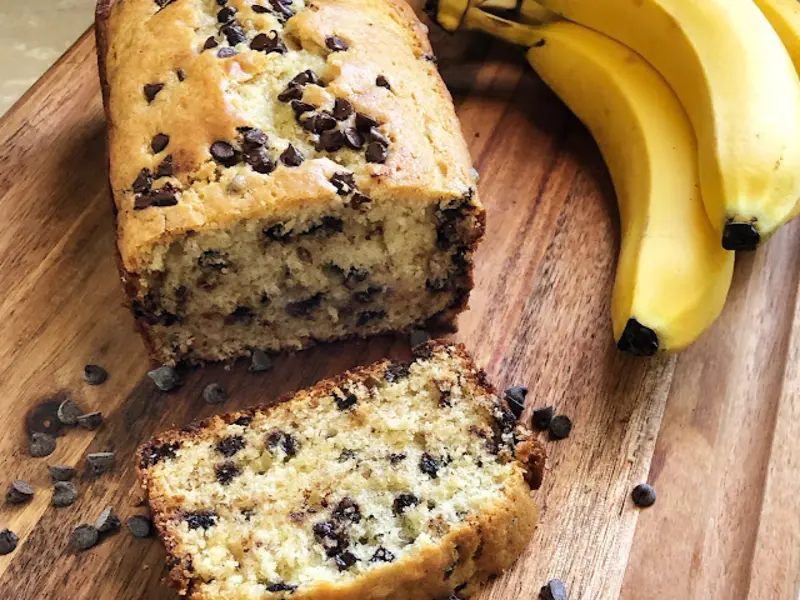

Banana Bread

Ingredients:
- 4 medium ripe bananas
- 120g sugar
- 75ml sunflower oil
- 240g wheat flour
- 3tsp baking powder
- 40g chopped walnuts (optional)
- 40g chocolate chips or chopped chocolate (optional)
Instructions:
- Preheat the oven to 200°C.
- Mash the bananas in a large bowl with the help of a fork. Then, add the sugar and sunflower oil and mix well.
- Add the flour and yeast and mix again. Finally, we optionally add the nuts and chocolate chips and mix.
- Grease the mold (you can use margarine, olive oil, coconut oil, cooking spray...) and pour the dough into the mold. Optionally, you can sprinkle a little sugar on top to make it crispier.
- Bake for 40 minutes at 200°C with the oven previously preheated. After 20 minutes, we'll take a look to see if it's browning too much on top. If so, you just have to cover it with aluminum foil and leave it for 20 more minutes.
- Let it cool before unmolding. If you want to unmold it before, it can break.